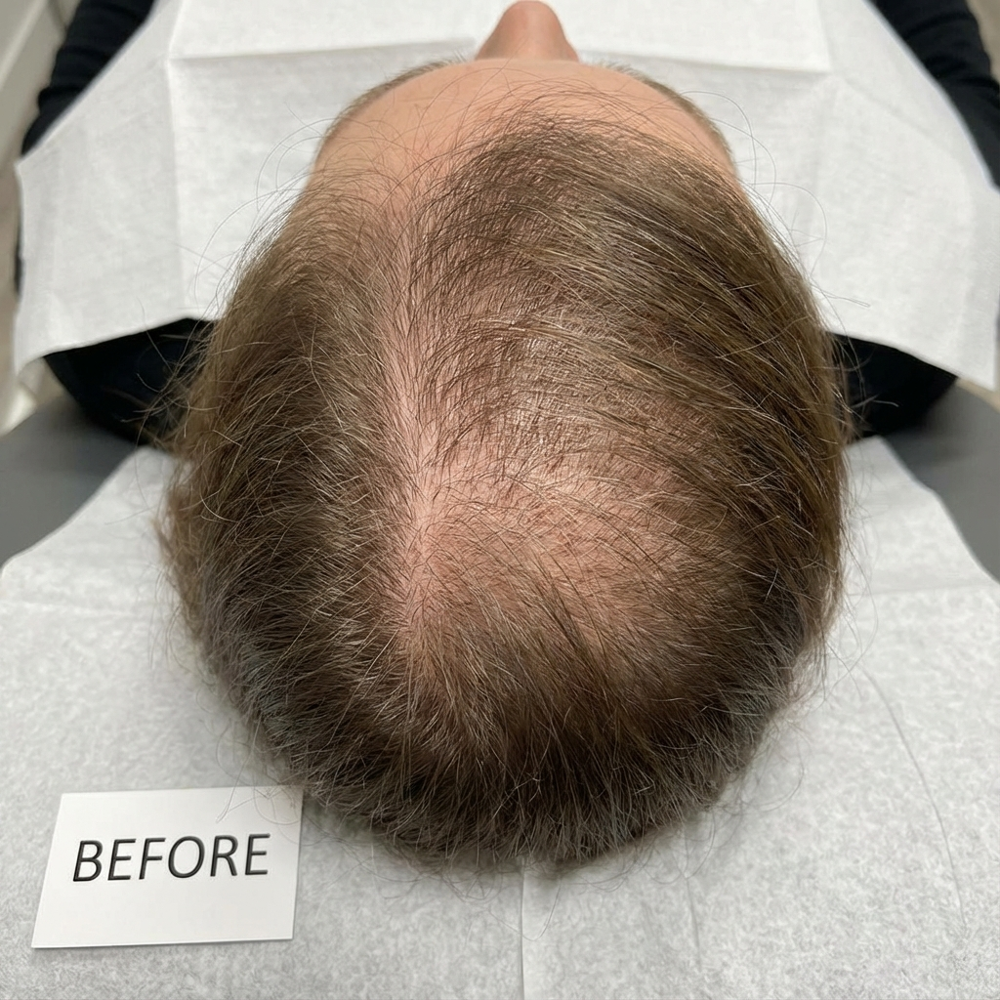
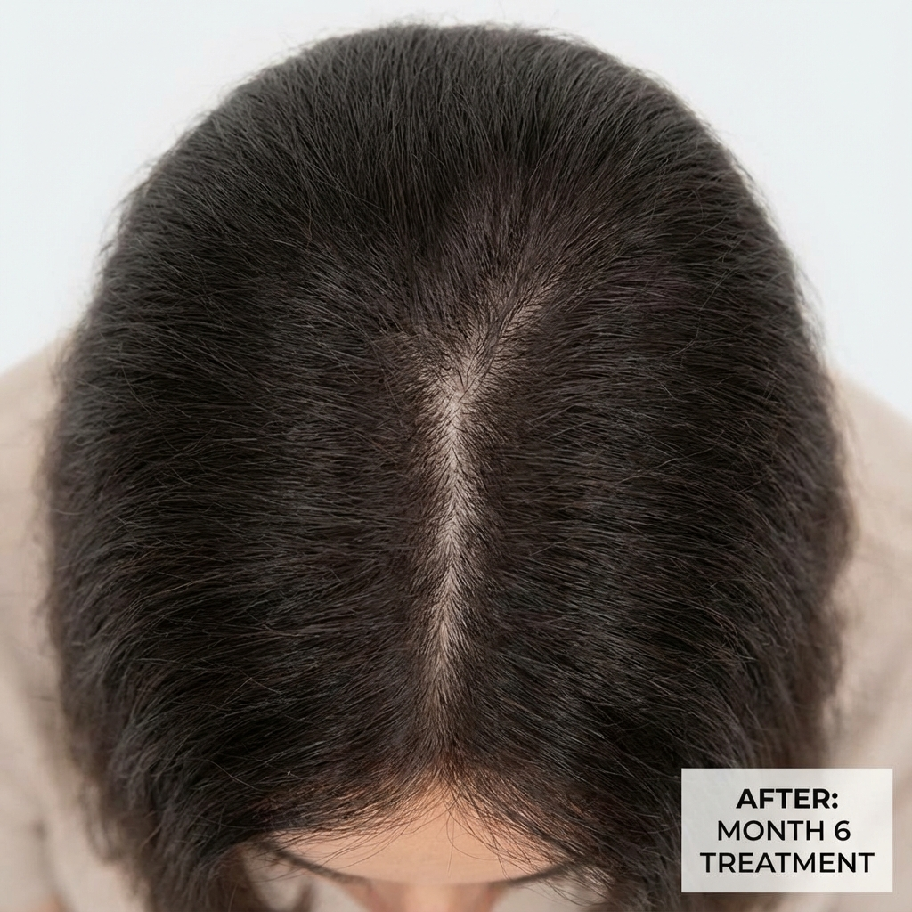

Patient Stories
Real journeys of skin restoration. We believe in transparency and realistic expectations.
Before

After 4
Months

Acne Scar Recovery
Treatment: Fractional CO2 + PRP. Focus was on reducing scarring depth while maintaining skin barrier health.
Before

After 1
Session

Natural Volume Restoration
Treatment: Hyaluronic Acid Fillers. Subtle enhancement of the cheekbones and jawline for a refreshed look.
Before

After 6
Months

Hair Density Improvement
Treatment: GFC Therapy. Stimulating natural hair follicles to enter the growth phase.